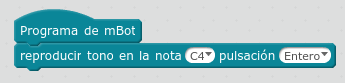
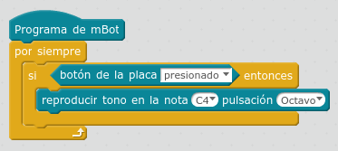

4.4 Test Accesorios
4.4.1 Test zumbador
Este programa es sencillo en el modo independiente del ordenador

Fuente: https://tecnoloxia.org/mclon Maria L CC-BY-SA
4.4.2 Test pulsador
Aprovechando que el zumbador ya funciona, hacemos este programa de forma independiente del ordenador:

Fuente: https://tecnoloxia.org/mclon Maria L CC-BY-SA

mClon por https://tecnoloxia.org/mclon bajo licencia Creative Commons Reconocimiento-CompartirIgual 4.0 Internacional License.